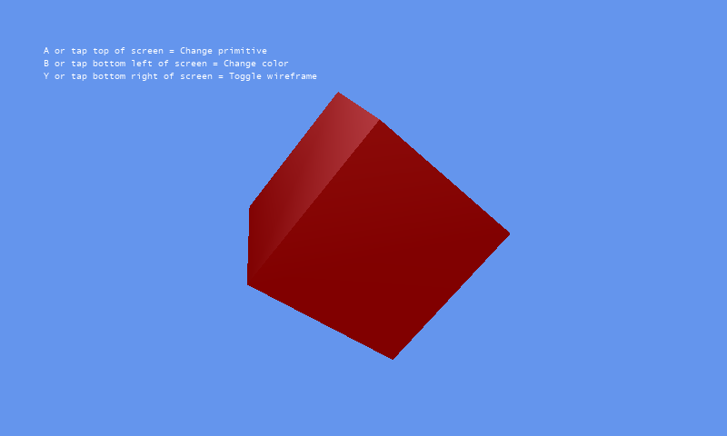

Primitives 3D
Ported from Microsoft's XNA 4.0 Primitives 3D Sample.
Source for this sample on GitHub ↗

Play ▸Opens in a new tab and runs in this browser. Click the canvas first so it receives the keyboard.
About this sample
Five geometric primitives — a cube, a sphere, a cylinder, a torus and the Utah teapot — each built as a small, self-contained class you can lift straight into a project. Press a key and the sample cycles through them, through a set of colours, and between solid and wireframe drawing.
Every primitive class offers two constructors. The short one gives sensible defaults and a shape one unit across; the longer one lets you choose the size and, for everything except the cube, how many triangles to tessellate the surface into — the trade between a smooth silhouette and a cheap one.
Their real value is in debugging. A bounding sphere or a bounding box is far easier to judge when you can see it drawn as a translucent or wireframe model in the scene it belongs to, and these classes are the quickest way to put one there.
Controls
| Action | Keyboard | Gamepad |
|---|---|---|
| Change primitive | A | A |
| Change colour | B | B |
| Toggle wireframe | Y | Y |
| Exit | Esc | Back |
On the original Windows Phone build the same three actions were the top, bottom-left and bottom-right of the screen. In the browser, exiting ends the sample rather than closing the tab.